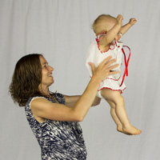
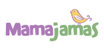
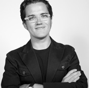

The "Make the Breast Pump Not Suck" Hackathon
September 20 - 21, 2014, MIT Media Lab
September 20 - 21, 2014, MIT Media Lab

Photo by Mason Marino
On Sept 20-21, 2014, 150 parents, engineers, designers and healthcare givers gathered at the MIT Media Lab for the "Make the Breast Pump Not Suck" Hackathon. Though the hackathon is over we are still accepting ideas for improving the breast pump. Send them to us here.
1st Prize, $3000 (sponsored by Vecna Technologies) and a trip for two team members to Silicon Valley to pitch their ideas to investors (sponsored by Pejman Mar Ventures)
Mighty Mom utility belt is a fashionable, discrete, hands-free wearable pump that automatically logs and analyses your personal data.
Contact the team via Erin Freeburger or Robyn Churchill
2nd Prize, $2000 (sponsored by Medela) and a hand-knit Freestyle breastpump cozy knit by Jessica Barnes
Helping Hands: a sturdy, easy to clean, minimal parts, hands free compression bra designed by nursing moms. The bra helps women manually express breastmilk (a technique proven to be as effective as electric pumps) without their hands.
Contact the team via Katherine Ong
3rd Prize, $1000 (sponsored by Naia Health)
PumpIO: An open software and hardware platform to make the breast pumping experience smarter, more data-rich and less isolating. PumpIO puts pumping women in touch with lactation consultants and communities as they are pumping, when they have questions and to help reinforce their commitment to their baby.
Contact the team via Max Metral
Most Outstanding User Focused Design, $500 (sponsored by Moxxly)
Second Nature is a breast pump that mimics the way that a baby suckles with massage and compression. This team also designed soft, low-profile flanges to be worn discreetly.
Contact the team via Kristy Johnson
Pioneer Award & Winner of the Popular Vote
Compress Express: A breast pump that mimics the natural and age-old art of hand expression, instead of archaic vacuum technology that dominates the market. Inspired by the simplicity of blood pressure cuffs, this project's gentle compression technology enables efficient milk expression and creates a discreetly wearable, virtually silent and hands-free breast pumping experience. This project, led by Susan Thompson, has been under development for two years and received the Pioneer Award for early and persistent innovation.
Contact the team via Susan Thompson
We welcome you using these images for your articles and stories. Please credit the photographers listed
You can see all of the awesome projects that were prototyped at the hackathon here on ChallengePost: http://breastpumphackathon.challengepost.com/submissions
Our expert judges also gave inspirational talks at the beginning of the event:
We want to seed ideas, connections and projects that will make the breast pump experience not suck so much. Covening talented people for a weekend is a first step. We also see this as an opportunity to catalyze innovation in maternal and pediatric health more generally.
A hackathon is a high-energy, collaborative event that seeks to bring together a diverse group of people to explore key issues and challenges in a particular field. Traditionally, hackathons have been mostly technical in nature, focusing on software engineering and, occasionally, on hardware development; our goal is to reach out to a wider range of talents and skills to investigate creative solutions for the maternal and neonatal healthcare space.
150 people that will self-organize into teams of 5-10 people per team. For our hackathon teams, we are looking for a mix of breastpump users, engineers, designers, health care and lactation specialists, and educators. Registration is free and open to the public but space is limited. You must register in order to attend and unfortunately all of our space is now full.

We are a group of MIT Media Lab students and researchers who are also parents:
Tal Achituv is a Research Assistant in the Fluid Interfaces group. His background is in hardware and software engineering and he has founded several companies. He is the father of Shira (2), and Lior who was born just last month. (@achituv)
Catherine D'Ignazio is a Research Affiliate in the Civic Media group. She is also an Assistant Professor of Civic Media and Data Visualization at Emerson College and a Fellow at the Engagement Lab. Her background is in the arts, data visualization and software development. She likes making fun, magical things with social impact. She has three kids and has pumped for all three. Her youngest is 14 months old and hung out at the Media Lab for the first 6 months of her life. (@kanarinka)
Alexis Hope is a Research Assistant in the Civic Media group. Her background is in human-centered design, qualitative research, and maternal health. Prior to coming to the lab, she worked on a project to build a low-cost, easy-to-use ultrasound system for midwives in Kenya and Uganda. She has no kids yet, but hopes that by the time she does there is a better breast pump! (@alexishope)
Taylor Levy is a Research Assistant in the Playful Systems group. Her background is in industrial design and graphics. She had a baby named Pau ("POW") just six weeks ago.
Alexandra Metral is a Research Affiliate in the Fluid Interfaces group. (The irony of the group’s name is not lost on her.) She is an artist/designer/local politician/stylist/educator, and also has experience running start-up ventures. Idea Translation, Life-Extension and Fun are common features of her work. She has nursed her three young children, the first with chronic illnesses which presented in nicu. Also pumped for an adopted neighbor. Alexandra and her family are bi-coastal, silicon valley is her other pod. (@alexmetral)
Dave Raymond is an honorary member of the Civic Media group and the Director of Training and Business Development for Vecna Technologies. He manages their multimillion dollar digital technology rollout to the VA Hospital System and loves improving health care for veterans. He has three kids and embraces the insanity by playing in a heavy metal band.
Che-Wei Wang is a Research Assistant in the Playful Systems group. He is baby Pau's dad and a whiz with hardware design and development.
As one of the midwives at our first hackathon said, "Maternal health lags behind other sectors for innovation." We are bringing together people from diverse fields, sectors and backgrounds to take a crack at making life better for moms, babies and new families. We see our role as a catalyst for new connections and new ideas that will inspire participants and highlight maternal and pediatric health as a vibrant, exciting space to be working in for the design and engineering leaders of tomorrow.
The health benefits of breastfeeding (both to mother and baby!) are numerous and include the reductions of type 2 diabetes, hypertension, obesity, female cancers, heart disease and osteoporosis. Despite the overwhelming data and worldwide endorsement of breastfeeding for at least two years, many women do not breastfeed at all or wean after several months. In particular, low-income, working women are rarely able to take extended maternity leave, to afford the cost of a pump, or to pump breastmilk at their workplace. In emerging economies around the world, women who go back to work wean their babies rather than using a breast pump.
Read our blog post about our prior hackathon that went viral.
The Breast Pump User and Health Care slots are full but there are a couple ways you can still help this effort.
The Engineering and Designer tickets are all sold out, but there are a couple ways to help from afar:
Our program will begin with introductions and inspirational talks from our sponsors and guest speakers. Next, hackathon registrants will provide brief “rocket pitches” about any idea they want to work on, inviting attendees to join their teams and share their skills. Once teams are created, the hacking begins. Problems are explored, ideas are shared, and innovative solutions are crafted. All meals, water, coffee, and tea will be provided to properly fuel our collaboration. We'll also have a bunch of awesome tech on hand - 3D printers, wearable prototyping materials, arduinos, Raspberry Pis and more. What teams create is theirs to keep.
At the end of Day 1, each team will provide a brief update of their progress before adjourning for the evening. Additional venues for collaboration will be provided for teams that wish to collaborate past the official Day 1 wrap-up time of 7pm. Day 2 will feature continuing collaboration through most of the day. Teams will present their ideas before a panel of expert judges, who will award prizes for the four most promising projects before the event comes to a close.
Yes. And Yes. It's free but space, materials and food are limited and we can't allow in people that are not registered. Unfortunately all the slots are now filled and we can't accept any more participants..
First prize - $3,000 (Vecna Technologies) and a trip for two team members to Silicon Valley to pitch your idea to VCs (Pejman Mar Ventures)
Second prize - $2,000 (Medela)
Third prize - $1,000 (Naia Health)
Outstanding User-Focused Design prize - $500 (Moxxly)
 
Vecna Technologies, Inc., is a healthcare IT company based in Cambridge MA. Vecna Medical's products include a suite of patient self-service products (Patient Portal, Patient Kiosk, and Patient Queuing), QC PathFinder (electronic infection surveillance software), and QC Bot (healthcare delivery robot). Vecna is sponsoring the First Prize.
Pejman Mar Ventures is an investment firm located in Silicon Valley. Pejman Mar Ventures is sponsoring two members of the winning team to fly to Silicon Valley and pitch their idea to investors.
Medela, Inc. Founded in 1961 in Zug, Switzerland by Olle Larsson, Medela continues to grow under the ownership of the Larsson family today. Medela serves its customers through 18 subsidiaries distributing to over 90 countries worldwide. Medela’s U.S. subsidiary, Medela, Inc., has been serving the American market for nearly 30 years. Medela’s Breastfeeding Division exists to enhance mother and baby health through the life-giving benefits of breastmilk. Our destiny statement guides all that we do, and inspires us to find new ways to support mothers on their breastfeeding journey. Medela is sponsoring the Second Prize.
Naia Health Inc., is a seed stage company developing digital, consumer-focused health products that will revolutionize the well-being and lifestyle of mothers and babies. Our initial product is a first-of-kind, radically improved breast pump for nursing moms that is hospital grade, yet fits into your favorite handbag. Naia Health is sponsoring the Third Prize.
Lasinoh. Founded by a breastfeeding mom in 1984, Lansinoh has been helping moms breastfeed for more than 30 years. Our family of products is designed for those who know that breastfeeding is one of the greatest gifts they can give their baby, but may need a little help along the way. Lasinoh is underwriting the catering for the event.
Simple Wishes was founded in 2008 by four sisters who had a “Simple Wish”...make the experience of using a breast pump easier. Their Signature Hands Free Pumping Bra, is often described as a “lifesaver”. Pumping Essentials is a boutique medical supply business that helps moms navigate the often confusing process of getting their breastpump covered by insurance. Simple wishes and Pumping Essentials are sponsoring scholarships for attendees who work with low-income mothers to be able to attend the event.
Moxxly is a consumer products company designing for modern women. We work at the crossroads of user-centered design, branding, and technology to create products that empower women. Our first product is an elegant pump system that allows women to breastfeed with their shirt on while receiving real-time data about their supply. Moxxly is sponsoring a prize for Outstanding User-Focused Design.
Mamajamas. The goal of Mamajamas is to help new and expecting parents buy only stuff they need — to help them spend less time thinking about stuff and more time enjoying pregnancy and new parenthood.
Ameda Inc. Today’s Ameda breast pumps combine founding engineer Einar Egnell’s innovative technology with the features a 21st century mother expects. Everything Ameda offers – breast pumps and products, breastfeeding education, support of lactation professionals – reflects our passion for breastfeeding. Since 1942, Ameda has been the leading innovator and has delivered unmatched quality and service to lactation professionals, institutions and most importantly, mothers. Ameda is sponsoring scholarships for attendees who work with low-income mothers to be able to attend the event.
The MIT Center for Civic Media works hand in hand with diverse communities to collaboratively create, design, deploy, and assess civic media tools and practices.
The MIT Center for Bits and Atoms is an interdisciplinary initiative exploring the boundary between computer science and physical science. CBA studies how to turn data into things, and things into data. It manages facilities, runs research programs, supervises students, works with sponsors, creates startups, and does public outreach.
iKatun is a non-profit organization that supports cultural events, exhibitions and conferences at the intersection of civic engagement and innovation. iKatun is an organizing partner for this event.

We have a brilliant advisory board of researchers, midwives, engineers, designers, entrepreneurs and lactation consultants.
Don Blair, Open Water Fellow & Hardware Hacker, Public Laboratory for Technology & Science
Willow Brugh, Center for Civic Media research affiliate, Berkman Center fellow, Geeks Without Bounds director, HackathonFAQ.com ranter
John Cary is the author of The Power of Pro Bono; a strategist for the $1,000,000 TED Prize; an advisor to Aspen Global Health ∧ Development; and co-author of March 2014 New York Times article calling for a redesign of the breast pump.
Robyn Churchill, C.N.M., M.S.N., Research Director, Better Birth Program at Ariadne Labs
Dr. Stephen Gerrard PhD, Department of Chemical Engineering and Biotechnology, University of Cambridge, UK. Co-founder, JustMilk.
Nancy Holtzman, R.N., B.S.N., I.B.C.L.C., R.L.C., C.P.N.
Courtney E. Martin is the author of multiple books, including Perfect Girls, Starving Daughters; co-founder of the Solutions Journalism Network; a strategist for the $1,000,000 TED Prize; and co-author of March 2014 New York Times article calling for a redesign of the breast pump.
We are pleased to offer hackathon scholarships of $500 to people from the Boston area who can speak to the challenges that lower income women face in breastfeeding or pumping breastmilk for their babies. Scholarship recipients might be parents, pumps users, caregivers, community health providers, or other technical or non-technical professions. Each scholarship recipient receives $500 to cover costs of childcare for the two days and transportation to the event. These scholarships are generously underwritten by Simple Wishes, Pumping Essentials, Mamajamas and Ameda. To apply for a scholarship, write an email to breastpump-organizers@media.mit.edu with a couple sentences describing your how your work engages with lower income breastfeeding or pumping women.
Email us at breastpump-organizers@media.mit.edu.
Email us at breastpump-organizers@media.mit.edu.